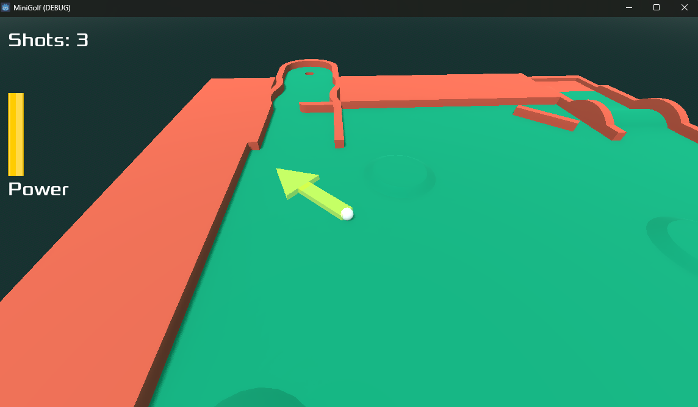

Welcome to My Projects
These are three games I created while
learning game development with Godot.
Each project helped me develop different
programming and design skills.

Magic Wolf Game
This is my third game and the one
where I had the opportunity to
create my own fantasy characters
and gameplay ideas.
Players control a magical wolf
exploring a corrupted forest.
They must collect crystals,
fight shadow foxes, and defeat
the Corrupted Stag boss.
I practiced character animations,
enemy behavior, combat mechanics,
level design, and boss battles.
View game artwork

3D Flying Game
My second project was a 3D flying
game developed as part of my
learning experience.
The player flies an airplane
through a city, collecting rings
and avoiding buildings and other
obstacles as the speed increases.
This project helped me learn
about 3D movement, obstacles,
procedural environments,
and distance tracking.
View game screenshot

Mini Golf Game
This was one of my first projects
while learning game development.
Players progress through
different golf holes and try
to get the ball into the hole
using as few shots as possible.
I practiced physics, player
controls, power adjustment,
collision detection, and
switching between levels.
View game screenshot
Game Project Comparison
Overview of my three Godot game projects
| Game |
Game Type |
Engine |
Project Order |
| Mini Golf |
3D Sports / Physics |
Godot |
First |
| 3D Flying |
3D Flying |
Godot |
Second |
| Magic Wolf |
2D Fantasy Platformer |
Godot |
Third |
Game Assets & Credits
These projects were created as part of
my game development learning experience.
Some games followed instructional
materials, while others included
my own character designs and
gameplay modifications.
Any third-party music, sound effects,
artwork, or other assets will be credited
here with their creators and sources.